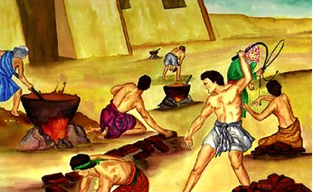

प्रारंभ में…

आदम और हवा
बाइबिल की पहली पुस्तक उत्पत्ति के नाम का अर्थ है शुरुआत। उत्पत्ति के पहले दो अध्याय हमें बताते हैं कि ईश्वर ने ब्रह्मांड का निर्माण किया: तारे, पृथ्वी और अन्य सभी ग्रह, और हर जीवित प्राणी जो है या कभी था। भगवान की सबसे खास रचना थी इंसान: लोग। लोग विशेष हैं क्योंकि वे भगवान की अपनी छवि में बनाए गए हैं। (देखें उत्पत्ति 1:26-27)
उत्पत्ति का तीसरा अध्याय इस बात की कहानी बताता है कि कैसे पाप ने संसार में प्रवेश किया। आदम और हव्वा, पहले पुरुष और पहली महिला, को यह विश्वास करने की परीक्षा हुई कि परमेश्वर ने उनसे झूठ बोला था। उस झूठ पर विश्वास करते हुए, उन्हें तब यकीन हो गया था कि वे वास्तव में भगवान के समान हो सकते हैं। जब परमेश्वर ने देखा कि वे अवज्ञाकारी हो गए हैं, तो आदम और हव्वा ने अब उसके साथ उसी खुले रिश्ते का आनंद नहीं लिया जो उनके पास पहले था; पाप ने उन्हें परमेश्वर से अलग कर दिया था। और इसलिए यह प्रत्येक व्यक्ति के लिए रहा है, एक को छोड़कर, जो तब से अब तक जीवित है: हम सभी पाप के द्वारा परमेश्वर से अलग हो गए हैं।

उत्पत्ति के अध्याय चार और पाँच मानव जाति की बढ़ती दुष्टता की दुखद कहानी को जारी रखते हैं। परमेश्वर ने अभी तक हमें सही जीवन जीने के लिए अपनी आज्ञा नहीं दी थी, और लोगों ने वैसा ही व्यवहार किया जैसा वे चाहते थे। सारी सभ्यता हर तरह की हिंसा और अनैतिकता पर झुकी हुई लगती थी। उनकी सर्वोच्च रचना की खेदजनक स्थिति देखकर भगवान को इस बात का पछतावा हुआ कि उन्होंने इस तरह के व्यवहार के लिए प्राणियों को सक्षम बनाया है।
उत्पत्ति के अध्याय 4 और 5 मानवता की बढ़ती दुष्टता की दुखद कहानी को जारी रखते हैं। भगवान ने अभी तक हमें सही जीवन जीने के लिए अपनी आज्ञाएँ नहीं दी थीं, और लोगों ने जैसा चाहा वैसा व्यवहार किया। ऐसा प्रतीत होता है कि पूरी सभ्यता ने हिंसा और सभी प्रकार की अनैतिकता का त्याग कर दिया है। जब परमेश्वर ने उसकी अत्यंत थकावट की दुखद स्थिति देखी, तो उसे पछतावा हुआ कि उसने ऐसा व्यवहार किया।

नूह
जब परमेश्वर ने अपनी पापी सृष्टि को नीचा देखा, तो उसे एक व्यक्ति मिला जो प्रभु के साथ चलता था: नूह। परमेश्वर ने मानवजाति का सफाया करने और नूह और उसके परिवार के साथ नए सिरे से शुरुआत करने का फैसला किया था। उत्पत्ति के छह से आठ अध्याय बताते हैं कि कैसे परमेश्वर ने पूरी मानव जाति को बाढ़ से नष्ट कर दिया, केवल नूह और उसकी पत्नी और उनके तीन बेटों और उनकी पत्नियों को बचा लिया।
उत्पत्ति के नौ से ग्यारह अध्याय हमें कहानी देते हैं कि कैसे नूह के पुत्रों, शेम, हाम और येपेत द्वारा बाढ़ के बाद पृथ्वी को फिर से बसाया गया था। अध्याय ग्यारह के अंत में, हमारा परिचय एक बहुत ही खास व्यक्ति से होता है, एक व्यक्ति जिसे परमेश्वर ऐसे लोगों का पिता बनने के लिए बुलाएगा, जिन्हें वह अपना कह सकता है।

अब्राहम
उत्पत्ति में, बाइबल हमें ऐसे कई लोगों के बारे में बताती है जो नूह की तरह "परमेश्वर के साथ-साथ चले"। परमेश्वर के साथ चलने के लिए विश्वास की आवश्यकता होती है: एक निर्विवाद विश्वास कि परमेश्वर वही करेगा जो वह करने का वादा करता है। नूह को यह विश्वास करने के लिए बहुत विश्वास था कि परमेश्वर पृथ्वी की पूरी आबादी को बाढ़ से नष्ट कर देगा और एक जहाज (एक बड़ी नाव) बनाने के लिए परमेश्वर के निर्देश का पालन करेगा, जब उसके चारों ओर के लोगों ने उसका उपहास किया जब वह काम कर रहा था। उत्पत्ति बारह में, हम एक अन्य व्यक्ति के बारे में सीखते हैं जिसके बारे में परमेश्वर को बड़े विश्वास की आवश्यकता होगी: इब्राहीम।
परमेश्वर ने अब्राम से बहुत कुछ पूछा (परमेश्वर ने बाद में उसका नाम बदलकर अब्राहम कर दिया): उसने अब्राहम को अपनी मातृभूमि छोड़ने और ऐसी जगह जाने के लिए कहा, जिसे उसने कभी नहीं देखा था, जहां वह किसी को नहीं जानता था। उसकी आज्ञाकारिता के लिए, परमेश्वर ने अब्राहम से दो वादे किए:
- कि वह कनान देश (जिसे हम अब इस्राएल कहते हैं) इब्राहीम और उसके वंशजों को देगा
- कि इब्राहीम के वंश में से एक बड़ी जाति निकलेगी
अब्राहम के मन में, इन दोनों वादों के साथ अवश्य ही समस्याएँ रही होंगी। कनान देश पहले से ही कई अन्य लोगों के समूह का था, और इब्राहीम और उसकी पत्नी के कोई संतान नहीं थी। और इब्राहीम की पत्नी, सारा, बच्चे पैदा करने के लिए बहुत बूढ़ी थी। तौभी इब्राहीम को विश्वास था, और इसलिथे वह अपके सारे घराने समेत कनान को निकल गया।
यदि आप उत्पत्ति के अध्याय 12-23 में अब्राहम की कहानी पढ़ते हैं, तो आप देखेंगे कि अब्राहम का विश्वास सिद्ध नहीं था: उसने कभी-कभी परमेश्वर और उसके समय की प्रतीक्षा करने के बजाय "मामलों को अपने हाथों में ले लिया"। फिर भी, हम उत्पत्ति 15:6 में पढ़ते हैं, "अब्राम ने यहोवा की प्रतीति की, और उस ने उसे धर्म बताया।"
यहां तक कि जब यह आसान नहीं होता है, तब भी जब हम रास्ता नहीं देख सकते हैं, भगवान हमें उस पर विश्वास करने के लिए कहते हैं।
जैसा कि परमेश्वर ने वादा किया था, सारा का एक बेटा है; उसने और इब्राहीम ने उसका नाम इसहाक रखा। सारा अपने बुढ़ापे में भी बच्चा पाकर बहुत खुश थी।
जब इसहाक बड़ा हुआ और ब्याह किया, तो उसके दो बेटे हुए, याकूब और एसाव। (उत्पत्ति 25:19-उत्पत्ति 30)
याकूब के बारह पुत्र थे (आप उत्पत्ति 35:23-26 में उनके नामों की सूची देख सकते हैं)। इन पुत्रों के नाम इस्राएल के बारह गोत्रों के नाम होंगे। (परमेश्वर ने वास्तव में याकूब का नाम बदलकर इस्राएल कर दिया - उत्पत्ति 35:10।) इन बारह पुत्रों के माध्यम से, परमेश्वर ने अब्राहम से लोगों की एक बड़ी जाति बनाने की अपनी प्रतिज्ञा को पूरा किया।

मूसा
याकूब के पुत्रों में से एक, यूसुफ, मिस्र गया और फिरौन के दरबार में एक महान अधिकारी बन गया (आप इसके बारे में उत्पत्ति 37-50 में पढ़ सकते हैं; यह एक लंबी कहानी है, लेकिन काफी साहसिक है)। आखिरकार, यूसुफ के सभी ग्यारह भाई भी मिस्र चले गए। जब तक यूसुफ जीवित था, उसका परिवार फिरौन के साथ उसके संबंध के कारण अच्छी तरह से रहता था।
यूसुफ की मृत्यु के बाद, अन्य पीढ़ियों का जन्म हुआ, और एक नया फिरौन सत्ता में आया, जो यह नहीं जानता था कि यूसुफ पर शाही परिवार का अनुग्रह था। इस नए फिरौन ने देखा कि यहूदियों (इस्राएलियों को यहूदी या यहूदी लोगों के रूप में भी जाना जाता था) की संख्या में बहुत वृद्धि हुई थी। इस से वह डर गया कि कहीं वे उसकी सरकार पर अधिकार न कर लें, सो उसने मिस्र में सब इस्राएलियों (यहूदियों) को दास बना लिया।
निर्गमन 2:23 में, बाइबल हमें बताती है कि इस्राएलियों ने मिस्र के दासों के रूप में बहुत कष्ट सहे। उन्होंने उन्हें छुड़ाने के लिए परमेश्वर की दोहाई दी, और परमेश्वर ने उनकी सुन ली। उसने इस्राएल को गुलामी से छुड़ाने में मदद के लिए यहूदियों में से एक आदमी को चुना। उस आदमी का नाम मूसा था।
इब्राहीम के विपरीत, जिसने परमेश्वर की बुलाहट पर ध्यान दिया, मूसा ने सबसे पहले प्रभु को किसी और का उपयोग करने के लिए प्राप्त करने का प्रयास किया। (निर्गमन 4:1-14) परमेश्वर ने मूसा को दिखाया कि वह परमेश्वर होगा, मूसा नहीं, जो वास्तव में यहूदी दासों को मुक्त करने के लिए फिरौन के हाथ को मजबूर करेगा। मूसा केवल परमेश्वर का दूत होगा।
मिस्र में, उन्होंने कई देवताओं की पूजा की - मूर्तियों - इब्राहीम, इसहाक और याकूब के भगवान की नहीं। जब मूसा पहली बार उसके पास आया (निर्गमन 5), फिरौन ने ठट्ठा किया: "यहोवा कौन है, कि मैं उसकी आज्ञा मानूं?"
मूसा एक दूसरे अनुरोध के साथ फिरौन के पास लौट आया कि फिरौन यहूदी दासों को रिहा कर दे। इस बार, हालांकि, मूसा ने अपने साथ परमेश्वर की ओर से एक चेतावनी दी: यदि फिरौन इस्राएलियों को मुक्त करने के लिए सहमत नहीं होता है, तो परमेश्वर मिस्र पर नौ विपत्तियों की एक श्रृंखला को हटा देगा: विनाश, बीमारी और अंधकार की विपत्तियाँ। आश्चर्यजनक रूप से, इन विपत्तियों के भयानक प्रभावों के बाद भी, फिरौन ने अभी भी परमेश्वर की शक्ति में विश्वास करने से इनकार कर दिया और यहूदियों को मुक्त नहीं किया। (निर्गमन 7:15-निर्गमन 11)
दसवीं विपत्ति (निर्गमन 12) के बाद ही फिरौन अंततः मिस्र के दासों को मुक्त करने के लिए सहमत हुआ। मिस्र के हर घराने का जेठा पुत्र मार डाला जाएगा। हालाँकि, परमेश्वर यहूदियों के पहलौठे पुत्रों को बचाएगा। उसने उन्हें एक मेमने की बलि चढ़ाने और उसके खून को अपने घरों के दरवाजों पर रंगने का निर्देश दिया। जब मृत्यु का दूत ज्येष्ठ पुत्रों को मारने के लिए आया, तो वह उन सभी इस्राएलियों के घरों को "पार" करेगा, जिन्होंने अपने दरवाजे पर मेमने के खून को रंगने के लिए उसके निर्देशों का पालन किया था।
आज तक, यहूदी हर साल फसह का त्योहार उस चमत्कार को मनाने के लिए मनाते हैं जिसने उन्हें गुलामी से मुक्त करने में मदद की।
मूसा के नेतृत्व में, यहूदियों ने मिस्र से अपनी यात्रा शुरू की। परमेश्वर के हाथों मिस्र में जो कुछ भी हुआ था, उसके बाद भी, फिरौन ने यहूदियों को बंधन में रखने के लिए एक आखिरी बार कोशिश की।

मिस्र की सेना ने इस्राएलियों का लाल सागर तक पीछा किया, यह सोचकर कि उन्होंने उन्हें पानी में फँसा लिया है (निर्गमन 14)। इस्राएली घबराने लगे, परन्तु मूसा ने उनसे अपने परमेश्वर पर विश्वास करने का आग्रह किया। परमेश्वर ने मूसा को आज्ञा दी कि वह अपनी छड़ी को जल के पास ऊपर उठाए। चमत्कारिक रूप से, लाल सागर का पानी अलग हो गया, जिससे शुष्क भूमि का एक मार्ग बन गया जिससे वे दूसरी तरफ जा सके। जब फ़िरौन की सेना ने उसी मार्ग से पार करने का प्रयास किया, तो समुद्र का जल दोनों ओर से नीचे गिर पड़ा, और वे सब डूब गए। अंत में, इस्राएल के लोग मिस्र से बाहर निकल आए और गुलामी से मुक्त हो गए।
और, जैसा कि परमेश्वर ने मूसा से कहा था जब उसने पहली बार उसे बुलाया था, यह परमेश्वर का शक्तिशाली हाथ था जिसने यह सब पूरा किया!

दस हुक्मनामे
जैसा कि हमने महान जलप्रलय की कहानी में देखा, परमेश्वर ने अभी तक मनुष्यों को अपने नियम नहीं दिए थे। जब यहूदी उस देश में जाने लगे जिसके बारे में परमेश्वर ने अब्राहम और उसके वंशजों से वादा किया था, परमेश्वर ने मूसा को सीनै पर्वत की चोटी पर चढ़ने का निर्देश दिया। वहाँ, लोगों को परमेश्वर की भारी महिमा से बचाने के लिए धुएँ से ढके पहाड़ के साथ, मूसा ने अपने लोगों के लिए परमेश्वर की आज्ञाओं को प्राप्त किया (निर्गमन 20:1-17)।
सिर्फ इसलिए कि यहूदी अब मिस्र के बंधन में नहीं थे, इसका मतलब यह नहीं था कि उनकी सारी मुसीबतें खत्म हो गई थीं। परमेश्वर ने उनसे जिस भूमि का वादा किया था, उसकी यात्रा की कहानी चालीस साल की अवधि को कवर करती है!

इस्राएलियों का विश्वास कमजोर था; उन्हें अक्सर संदेह होता था कि परमेश्वर उन्हें प्रदान करेगा। वे कभी-कभी इतने निराश हो जाते थे कि वे वास्तव में मिस्र लौटने की बात करते थे! और, शायद सबसे बुरी बात यह है कि उन्होंने पूजा के लिए मूर्तियाँ भी बनाईं क्योंकि उन्हें ईश्वर पर इतना संदेह था।
मूसा की मृत्यु की कहानी व्यवस्थाविवरण के 34वें अध्याय में दर्ज है। यह व्यवस्थाविवरण की पुस्तक में है कि परमेश्वर उन नियमों का विस्तार करता है जो उसने अपने लोगों को सीनै पर्वत पर दिए थे। वह बताता है कि लोगों को अपने साथी यहूदियों के बीच कैसा व्यवहार करना चाहिए और उन्हें परमेश्वर की उपासना कैसे करनी चाहिए।